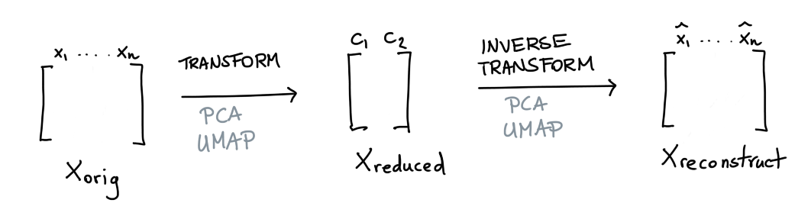
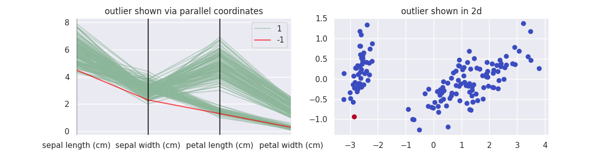
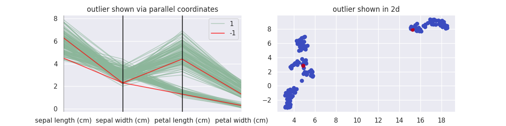
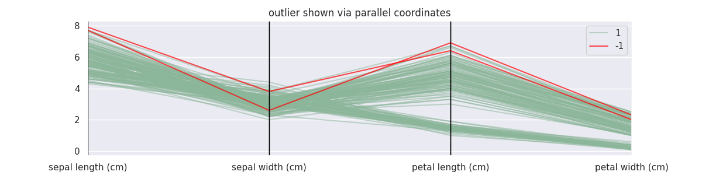
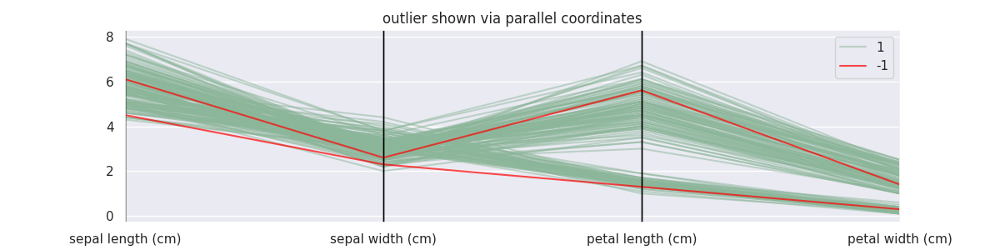
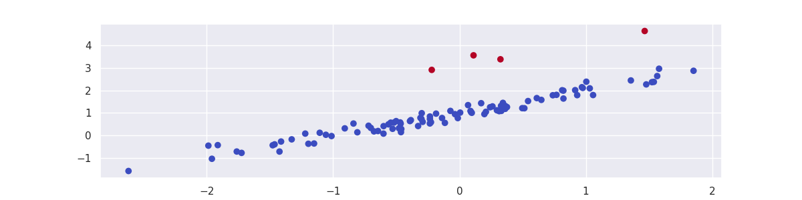

Outliers¶
This package offers a few algorithms that might help you find outliers. Note that we offer a subset of algorithms that we could not find elsewhere. If you're interested in more algorithms we might recommend you have a look at pyod too. That said, we'll demonstrate a few approaches here.
Decomposition Based Detection¶
The scikit-learn ecosystem offers many tools for dimensionality reduction. Two popular variants are PCA and UMAP. What is nice about both of these methods is that they can reduce the data but also apply the inverse operation.

This is similar to what an autoencoder might do. But let's now say that we have a dataset \(X\) and that we're happy with our dimensionality reduction technique. In this situation there's a balance between reduction of data and loss of information.
Suppose that we have a datapoint \(x_{\text{orig}}\) we pass through our transformer after which we try to reconstruct it again. If \(x_{\text{orig}}\) differs a lot from \(x_{\text{reconstruct}}\) then we may have a good candidate to investigate as an outlier.
We'll demonstrate both methods briefly below, using this following function to make some plots.
Data and functionalities
import matplotlib.pylab as plt
import seaborn as sns
from sklearn.datasets import load_iris
from pandas.plotting import parallel_coordinates
sns.set_theme()
X_orig, y = load_iris(return_X_y=True, as_frame=True)
def plot_model(mod, components, threshold):
mod = mod(n_components=components, threshold=threshold, random_state=111).fit(X_orig)
X = X_orig.copy()
X['label'] = mod.predict(X)
plt.figure(figsize=(12, 3))
plt.subplot(121)
parallel_coordinates(X.loc[lambda d: d['label'] == 1], class_column='label', alpha=0.5)
parallel_coordinates(X.loc[lambda d: d['label'] == -1], class_column='label', color='red', alpha=0.7)
plt.title("outlier shown via parallel coordinates")
if components == 2:
plt.subplot(122)
X_reduced = mod.transform(X_orig)
plt.scatter(X_reduced[:, 0], X_reduced[:, 1], c=X['label'], cmap="coolwarm_r")
plt.title("outlier shown in 2d");
PCA Demonstration¶
Let's start with PCA methods to decompose and reconstruct the data, wrapped in the class PCAOutlierDetection.
from sklego.decomposition import PCAOutlierDetection
plot_model(PCAOutlierDetection, components=2, threshold=0.1)

UMAP Demonstration¶
Let's now do the same with UMAP, wrapped in the class UMAPOutlierDetection.
from sklego.decomposition import UMAPOutlierDetection
plot_model(UMAPOutlierDetection, components=2, threshold=0.1)

One thing to keep in mind here: UMAP is a lot slower.
Interpretation of Hyperparams¶
Both methods have a n_components and threshold parameter. The former tells the underlying transformer how many components to reduce to while the latter tells the model when to consider a reconstruction error "too big" for a datapoint not to be an outlier.
If the relative error is larger than the set threshold it will be detected as an outlier. Typically that means that the threshold will be a lower value between 0.0 and 0.1. You can also specify an absolute threshold if that is preferable.
The other parameters in both models are unique to their underlying transformer method.
Density Based Detection¶
We've also got a few outlier detection techniques that are density based approaches. You will find a subset documented in the mixture method section but for completeness we will also list them below here as a comparison.
GMMOutlierDetector Demonstration¶
from sklego.mixture import GMMOutlierDetector
mod = GMMOutlierDetector(n_components=4, threshold=0.99).fit(X_orig)
X = X_orig.copy()
X['label'] = mod.predict(X)
plt.figure(figsize=(12, 3))
parallel_coordinates(X.loc[lambda d: d['label'] == 1], class_column='label', alpha=0.5)
parallel_coordinates(X.loc[lambda d: d['label'] == -1], class_column='label', color='red', alpha=0.7)
plt.title("outlier shown via parallel coordinates");

BayesianGMMOutlierDetector Demonstration¶
from sklego.mixture import BayesianGMMOutlierDetector
mod = BayesianGMMOutlierDetector(n_components=4, threshold=0.99).fit(X_orig)
X = X_orig.copy()
X['label'] = mod.predict(X)
plt.figure(figsize=(12, 3))
parallel_coordinates(X.loc[lambda d: d['label'] == 1], class_column='label', alpha=0.5)
parallel_coordinates(X.loc[lambda d: d['label'] == -1], class_column='label', color='red', alpha=0.7)
plt.title("outlier shown via parallel coordinates");

Note that for these density based approaches the threshold needs to be interpreted differently. If you're interested, you can find more information here.
Model Based Outlier Detection¶
Suppose that you've got an accurate model. Then you could argue that when a datapoint disagrees with your model that it might be an outlier.
This library offers meta models that wrap estimators in order to become outlier detection models.
Regression Based¶
If you have a regression model then we offer a RegressionOutlierDetector. This model takes the output of the regression model and compares it against the true regression labels. If the difference between the label and predicted value is larger than a threshold then we output an outlier flag.
Note that in order to be complaint to the scikit-learn API we require that the y-label for the regression to be part of the X dataset.
import numpy as np
import matplotlib.pylab as plt
import seaborn as sns
from sklearn.linear_model import LinearRegression
from sklego.meta import RegressionOutlierDetector
sns.set_theme()
# generate random data for illustrative example
np.random.seed(42)
X = np.random.normal(0, 1, (100, 1))
y = 1 + np.sum(X, axis=1).reshape(-1, 1) + np.random.normal(0, 0.2, (100, 1))
for i in [20, 25, 50, 80]:
y[i] += 2
X = np.concatenate([X, y], axis=1)
# fit and plot
mod = RegressionOutlierDetector(LinearRegression(), column=1)
mod.fit(X)
plt.scatter(X[:, 0], X[:, 1], c=mod.predict(X), cmap='coolwarm_r');
